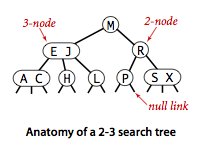
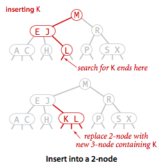
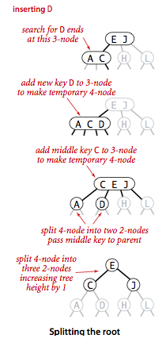

Balanced Search Trees
We introduce in this section a type of binary search tree where costs are guaranteed to be logarithmic. Our trees have near-perfect balance, where the height is guaranteed to be no larger than 2 lg N.
§ 2-3 search trees.
The primary step to get the flexibility that we need to guarantee balance in search trees is to allow the nodes in our trees to hold more than one key.
 Definition.
Definition.
- A 2-node, with one key (and associated value) and two links, a left link to a 2-3 search tree with smaller keys, and a right link to a 2-3 search tree with larger keys
- A 3-node, with two keys (and associated values) and three links, a left link to a 2-3 search tree with smaller keys, a middle link to a 2-3 search tree with keys between the node's keys and a right link to a 2-3 search tree with larger keys.

A perfectly balanced 2-3 search tree (or 2-3 tree for short) is one whose null links are all the same distance from the root.
- Search.
To determine whether a key is in a 2-3 tree, we compare it against
the keys at the root: If it is equal to any of them, we have a search hit;
otherwise, we follow the link from the root to the subtree corresponding
to the interval of key values that could contain
the search key, and then recursively search in that subtree.

- Insert into a 2-node.
To insert a new node in a 2-3 tree, we might do an unsuccessful search and then hook on the
node at the bottom, as we did with BSTs, but the new tree would not remain perfectly balanced.
It is easy to maintain perfect balance if the node at which the search terminates
is a 2-node: We just replace the node with a 3-node containing its key and the new key to be
inserted.

- Insert into a tree consisting of a single 3-node.
Suppose that we want to insert into a tiny 2-3 tree consisting of just a single 3-node.
Such a tree has two keys, but no room for a new key in its one node. To be able to perform the
insertion, we temporarily put the new key into a 4-node,
a natural extension of our node type that has three keys and four links.
Creating the 4-node is convenient because it is easy to
convert it into a 2-3 tree made up of three 2-nodes, one with the middle key (at the root),
one with the smallest of the three keys (pointed to by the left link of the root), and one
with the largest of the three keys (pointed to by the right link of the root).

- Insert into a 3-node whose parent is a 2-node.
Suppose that the search ends at a 3-node at the bottom whose parent is a 2-node.
In this case, we can still make room for the new key while maintaining
perfect balance in the tree, by making a temporary 4-node
as just described, then splitting the 4-node as just described, but then,
instead of creating a new node to hold the middle key, moving the middle key
to the nodes parent.

- Insert into a 3-node whose parent is a 3-node.
Now suppose that the search ends at a node whose parent is a 3-node. Again, we make a
temporary 4-node as just described, then split it and insert its middle key into the parent.
The parent was a 3-node, so we replace it with a temporary new 4-node containing the middle
key from the 4-node split. Then, we perform precisely the same transformation on that node.
That is we split the new 4-node and insert its middle key into its parent.
Extending to the general case is clear: we continue up the tree,
splitting 4-nodes and inserting their middle keys in their parents until
reaching a 2-node, which we replace with a 3-node that does not to
be further split, or until reaching a 3-node at the root.

- Splitting the root.
If we have 3-nodes along the whole path from the insertion point to the
root, we end up with a temporary 4-node at the root. In this case we
split the temporary 4-node into three 2-nodes.

- Local transformations. The basis of the 2-3 tree insertion algorithm is that all of these transformations are purely local: No part of the 2-3 tree needs to be examined or modified other than the specified nodes and links. The number of links changed for each transformation is bounded by a small constant. Each of the transformations passes up one of the keys from a 4-node to that nodes parent in the tree, and then restructures links accordingly, without touching any other part of the tree.
- Global properties. These local transformations preserve the global properties that the tree is ordered and balanced: the number of links on the path from the root to any null link is the same.
Proposition.
Search and insert operations in a 2-3 tree with N keys are guaranteed to visit at most lg N nodes.

However, we are only part of the way to an implementation. Although it would be possible to write code that performs transformations on distinct data types representing 2- and 3-nodes, most of the tasks that we have described are inconvenient to implement in this direct representation.
§ Red-black BSTs.
The insertion algorithm for 2-3 trees just described is not difficult to understand. We consider a simple representation known as a red-black BST that leads to a natural implementation.
- Encoding 3-nodes.
The basic idea behind red-black BSTs is to encode 2-3 trees by starting with standard BSTs
(which are made up of 2-nodes) and adding extra information to encode 3-nodes. We think of the
links as being of two different types: red
links, which bind together two 2-nodes to represent
3-nodes, and black links, which bind together the 2-3 tree.
Specifically, we represent 3-nodes
as two 2-nodes connected by a single red link that leans left.
We refer to BSTs that represent 2-3 trees in this way as
red-black BSTs.
One advantage of using such a representation is that it allows us to use our
get()code for standard BST search without modification.
- A 1-1 correspondence.
Given any 2-3 tree, we can immediately derive a corresponding red-black BST, just by
converting each node as specified.
Conversely, if we draw the red links horizontally in a red-black BST,
all of the null links are the same
distance from the root, and if we then collapse together the nodes connected
by red links, the result is a 2-3 tree.

- Color representation.
Since each node is pointed to by precisely one link (from its
parent), we encode the color of links in nodes,
by adding a
booleaninstance variable color to ourNodedata type, which istrueif the link from the parent is red andfalseif it is black. By convention, null links are black.
- Rotations. The implementation that we will consider might allow right-leaning red links or two red-links in a row during an operation, but it always corrects these conditions before completion, through judicious use of an operation called rotation that switches orientation of red links. First, suppose that we have a right-leaning red link that needs to be rotated to lean to the left. This operation is called a left rotation. Implementing a right rotation that converts a left-leaning red link to a right-leaning one amounts to the same code, with left and right interchanged.
- Flipping colors.
The implementation that we will consider might also allow a black parent to have
two red children.
The color flip operation flips the colors of the
the two red children to black and the color of the black parent to red.


- Insert into a single 2-node.
- Insert into a 2-node at the bottom.
- Insert into a tree with two keys (in a 3-node).
- Keeping the root black.
- Insert into a 3-node at the bottom.
- Passing a red link up the tree.
§ Implementation.
Program RedBlackBST.java implements a left-leaning red-black BST. Program RedBlackLiteBST.java is a simpler version that only implement put, get, and contains.

§ Deletion.
Proposition.
The height of a red-blackBST with N nodes is no more than 2 lg N.
Proposition.
In a red-black BST, the following operations take logarithmic time in the worst case: search, insertion, finding the minimum, finding the maximum, floor, ceiling, rank, select, delete the minimum, delete the maximum, delete, and range count.
Property.
The average length of a path from the root to a node in a red-black BST with N nodes is ~1.00 lg N.
§ Visualization.
The following visualization shows 255 keys inserted into a red-black BST in random order.